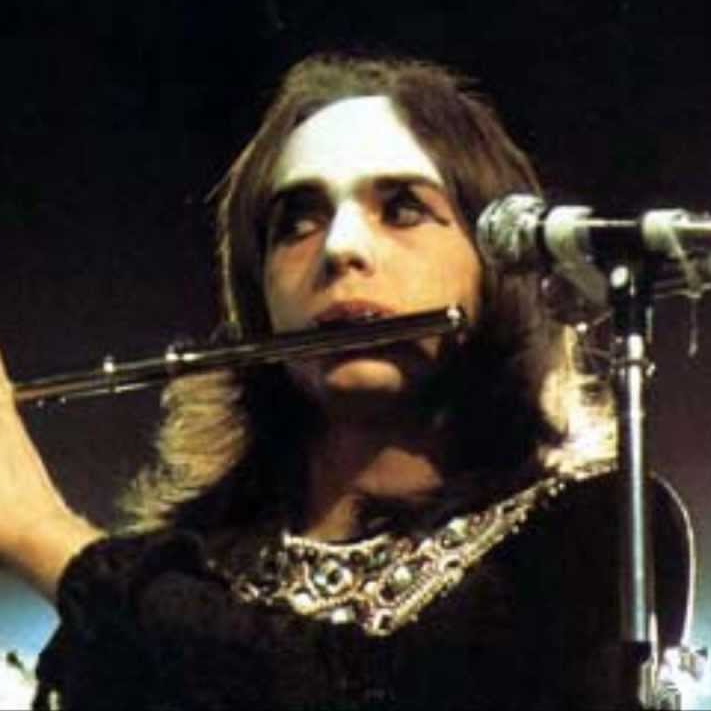

Whats new?
More news

Peter Gabriel back to Genesis
19 February 1979
After 5 years from his departure from the famous progressive rock band Genesis, singer and songwriter Peter Gabriel has broken the silence about Genesis, he's coming back to sing in their lastest album. The current band leader and singer of the band, Phil Collins, who used to be the drummer when Peter Gabriel was in the band, says: "I'm tired of trying to be famous with prog rock, I think we should do more pop music based work, and Peter is coming back to help me do it".
19 February 1979
New Emerson, Lake and Palmer tour is coming up19 February 1979
The Who drummer Keith Moon, dies at the age of 3218 February 1979
Robert Fripp Explains Why King Crimson Keep Breaking Up